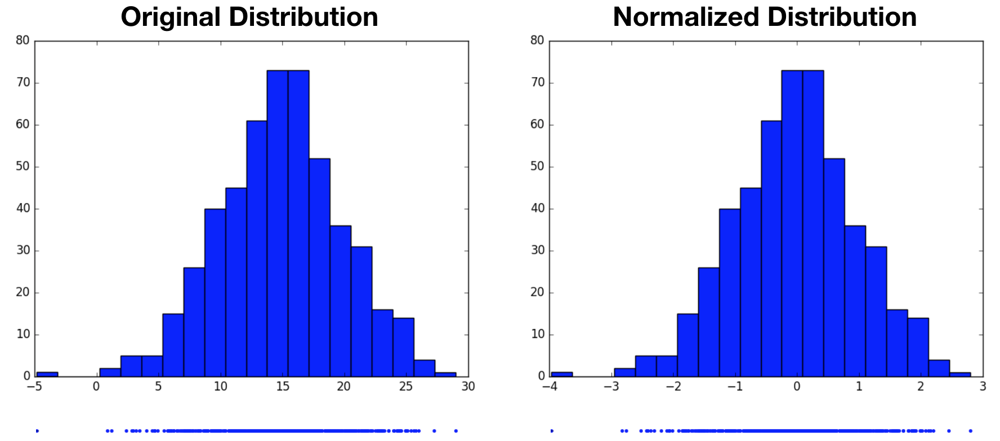
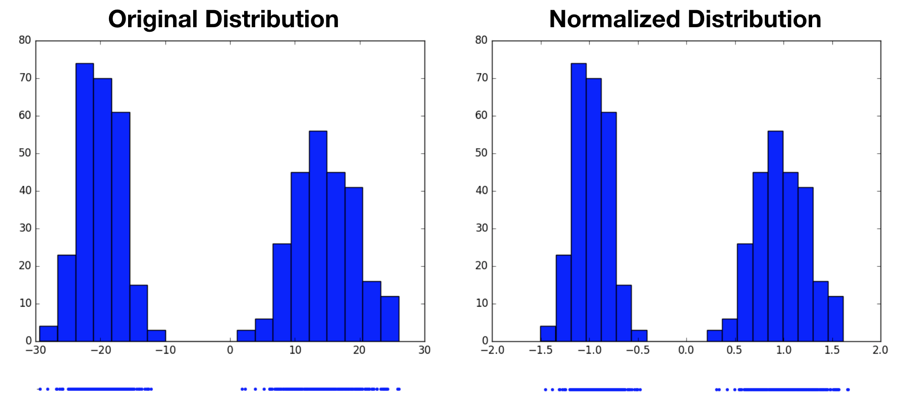
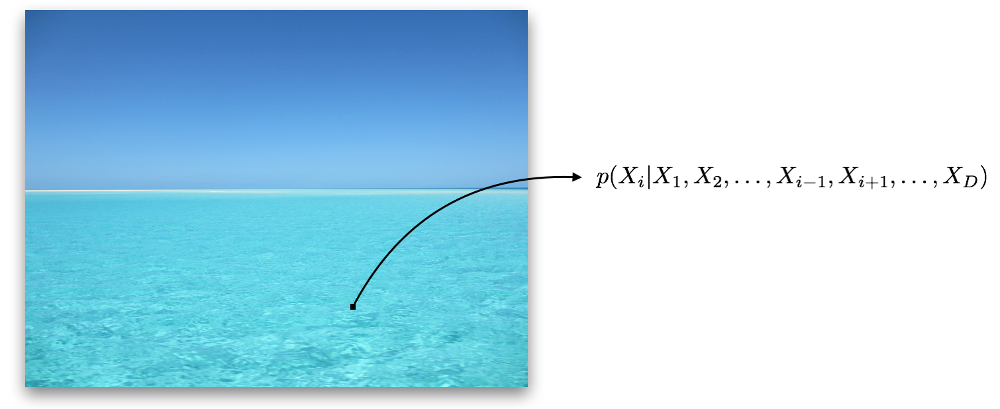
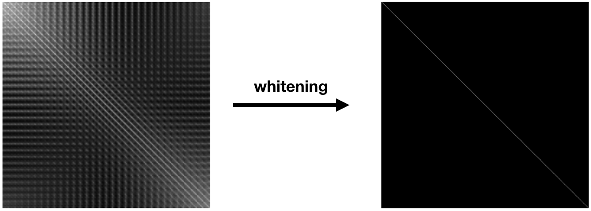
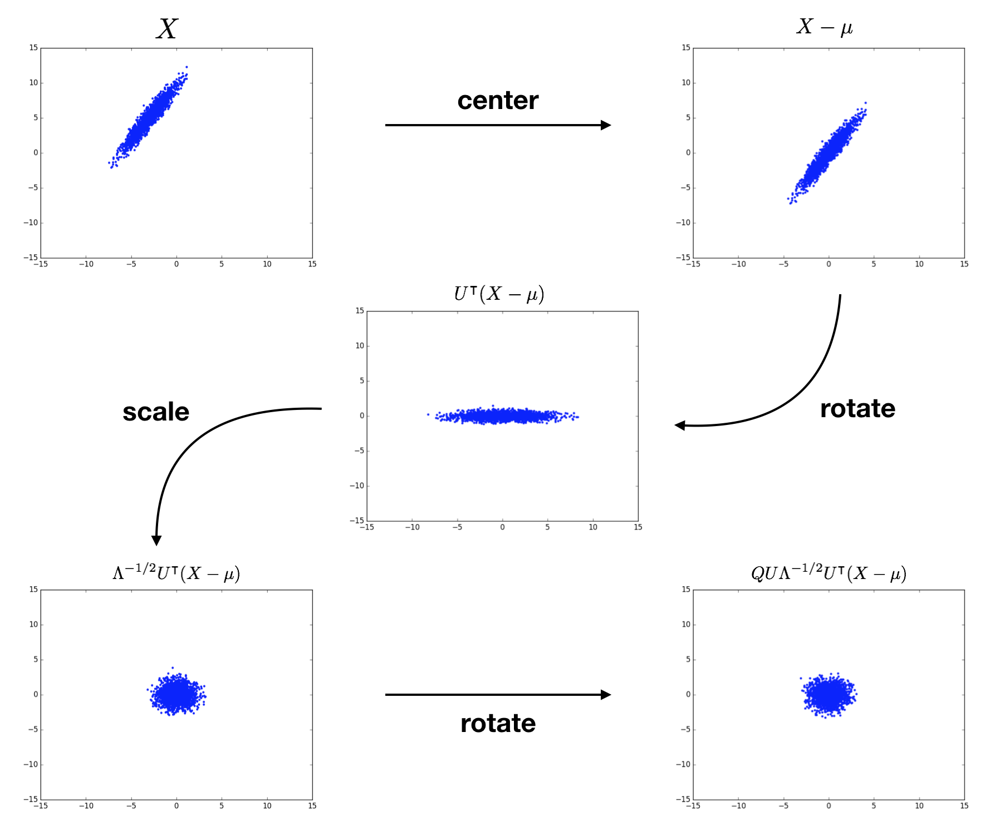

statistical whitening
Normalization is a fundamental component of machine learning. Take any introductory machine learning course, and you'll learn about the importance of normalizing the inputs to your model. The justification goes something like this: the important patterns in the data often correspond to the relative relationships between the different input dimensions. Therefore, you can make the task of learning and recognizing these patterns easier by removing the constant offset and standardizing the scales.
There have been a number of recent advances in deep learning related to normalization. As just a sampling, the often cited AlexNet convolutional neural network used local response normalization, batch normalization is a powerful technique for normalizing the activations within a network, layer normalization is another form of normalization suited for recurrent networks, weight normalization is a way to normalize the weights within a network, and normalizing flows is a normalization method for building flexible posterior probability distributions to improve variational inference.
Another interesting aspect about normalization is that it is one area where machine learning and neuroscience seem to agree. Normalization appears to be ubiquitous in the brain, often implemented in the form of lateral inhibition. This is the process by which activity in one neuron inhibits activity in nearby neurons and vice versa, effectively shifting their overall activations to highlight their relative differences. For example, horizontal cells in the retina inhibit neighboring photoreceptor neurons, acting to sharpen the input and allowing the eye to adjust to different lighting levels. Likewise, lateral inhibition appears to be a key component of other sensory processing pathways as well as processing in the cerebral cortex, where inhibitory interneurons constitute roughly 20% of the neural population.
I find this commonality of normalization between machine learning and neuroscience encouraging, as it offers the opportunity to find connections between these two fields. Studying normalization in nervous systems may provide suggestions for ways to improve machine learning models, and studying normalization in machine learning models may provide a better theoretical understanding of normalization in nervous systems. I recently decided to learn more about normalization, in particular, statistical whitening. In the rest of this blog post, I'll share what I learned along with code for implementing some examples.
what is normalization?
In the realm of statistics, normalization refers to taking a distribution and transforming it into a standard normal (i.e. Gaussian) distribution. For instance, imagine we have samples from the distribution of some variable $X$ defined along one real-valued dimension. This could be height measurements, house prices, sensor readings, etc. To get a normalized version of this distribution, $Z$, we subtract off the mean, $\mu$, and divide by the standard deviation, $\sigma$. \begin{equation} Z = \frac{X - \mu}{\sigma} \end{equation} Note that we're broadcasting $\mu$ and $\sigma$ to match the number of samples in $X$, and the division is performed elementwise. In the example below, we draw 500 samples from a Gaussian-distributed variable centered at $15$ with a standard deviation of $5$, then normalize. The resulting normalized distribution has a mean of $0$ and a standard deviation of $1$. From the histograms, we see that the normalized variable's distribution is simply a shifted and scaled replica of the original variable's distribution.
Notice that we started by assuming the original variable's distribution took a unimodal form, that of a Gaussian. It's perhaps reasonable to expect that we can transform one Gaussian distribution into another. What would this procedure look like for a multimodal distribution? Would we still end up with a standard normal distribution, or something altogether different? In the following example, we now draw samples from a mixture of Gaussians, then perform the same normalization operation. Again, the normalized distribution has a mean of $0$ and a standard deviation of $1$, however it remains a bimodal distribution. This highlights the fact that normalization only produces standard normal distributions when it operates on variables that are already normally distributed. For other distributions, it may not be an appropriate choice.
adding more dimensions: whitening
Real data is rarely one-dimensional. We might have height and weight measurements, house prices and number of bedrooms, or multiple sensor readings (e.g. pixels in an image). We would like to extend normalization to handle multiple input dimensions, often referred to as features. As we'll see, this is actually ill-defined, and in practice, many within the machine learning community do not perform true multi-dimensional normalization, i.e. statistical whitening.
Multi-dimensional variables are not simply a collection of their one-dimensional counterparts. There can now be dependencies among the dimensions, which we can think of as patterns within the data. For instance, if given an image of a blue ocean that is missing a single pixel, the value of that pixel is not independent of the nearby pixels; it is almost certainly blue.
Consider the joint distribution of the input dimensions. If there are $D$ input dimensions, where $X_i$ denotes the $i^\text{th}$ dimension, the joint distribution is written as: \begin{equation} p(X) = p(X_1, X_2, ..., X_D). \end{equation} Using the chain rule of probability, we can rewrite this as the product of conditional distributions: \begin{equation} p(X_1, X_2, ..., X_D) = p(X_1) p(X_2 | X_1) ... p(X_D | X_1, X_2, ..., X_{D-1}). \end{equation} Note that the initial dimension on which we condition ($X_1$ in this case) is arbitrary. The conditional distributions express the fact that the value of a particular dimension depends on the other dimensions. The missing pixel of the blue ocean is most likely blue because it came from the same object as nearby pixels; it's not random noise.
The degree of linear dependence between the dimensions is captured by the covariance matrix, $\text{cov} (X) = \Sigma$, of the input data. This is a symmetric $D \times D$ matrix, where $\Sigma_{i, j}$ contains the covariance between dimension $i$ and dimension $j$. The diagonal entries of this matrix contain the variance of each dimension. The figure below on the left depicts the covariance matrix of the $3,072$ dimensions ($ 32 \times 32 \times 3$) of CIFAR 10.
Normalization of multi-dimensional variables, which we call statistical whitening, not only scales each variance term to $1$, it removes all of the off-diagonal covariance terms. Whitening linearly decorrelates the input dimensions. In other words, whitening transforms $X$ into a matrix $Z$, such that $\text{cov}(Z) = \mathbf{I}$. Here, $\mathbf{I}$ is the $D \times D$ identity matrix, with ones along the diagonal and zeros everywhere else. This is shown in the above figure on the right. We can write $Z$ as: \begin{equation} Z = W(X - \mu), \end{equation} where $W$ is a $D \times D$ (whitening) matrix. We want to find a $W$ that satisfies \begin{equation} \text{cov}(Z) = \mathbf{I} \end{equation} \begin{equation} \mathbb{E}[ZZ^\intercal] = \mathbf{I} \end{equation} \begin{equation} \mathbb{E}[W(X - \mu)(W(X - \mu))^\intercal] = \mathbf{I} \end{equation} \begin{equation} \mathbb{E}[W(X - \mu)(X - \mu)^\intercal W^\intercal] = \mathbf{I} \end{equation} \begin{equation} W \Sigma W^\intercal = \mathbf{I} \end{equation} \begin{equation} W \Sigma W^\intercal W = W \end{equation} \begin{equation} W^\intercal W = \Sigma^{-1} \end{equation}
rotational freedom
There are actually infinitely many choices of $W$ that satisfy this final expression. To show this, we can write: \begin{equation} W = Q \Sigma^{-1/2}, \end{equation} where $Q$ is an orthogonal matrix, meaning that $Q^\intercal Q = \mathbf{I}$. In this case, $W$ always satisfies equation 11, regardless of the choice of $Q$, because \begin{equation} W^\intercal W = (Q \Sigma^{-1/2})^\intercal Q \Sigma^{-1/2} = (\Sigma^{-1/2})^\intercal Q^\intercal Q \Sigma^{-1/2} = (\Sigma^{-1/2})^\intercal \mathbf{I} \Sigma^{-1/2} = \Sigma^{-1}. \end{equation} This has a nice geometrical interpretation. To get there, we need to decompose $\Sigma$ into its eigenvectors, $U$, and eigenvalues, $\Lambda$: \begin{equation} \Sigma = U \Lambda U^\intercal. \end{equation} The (unique) inverse matrix square root of $\Sigma$ is given as \begin{equation} \Sigma^{-1/2} = U \Lambda^{-1/2} U^\intercal. \end{equation} Plugging this expression into equation 12 yields \begin{equation} W = Q U \Lambda^{-1/2} U^\intercal. \end{equation} When using this $W$ in the whitening transformation $Z = W(X - \mu)$, we see that we1) center the data by $\mu$,
2) rotate by $U^\intercal$,
3) scale by $\Lambda^{-1/2}$, then
4) rotate by $Q U$.
To sum up, we transform $X$ into the eigenbasis through shifting and rotating, scale it there to normalize each dimension, then perform another rotation to get to whatever basis we want. There are infinitely many choices for $Q$ due to the rotational symmetry of the scaled distribution! Check out Kessy et al. (2015) for further discussion of this geometrical interpretation. The following figure visualizes the whitening of a 2D example input distribution. The terms above each plot specify the cumulative result of the procedure.
optimality
With infinitely many choices for $W$, how do we know which one to choose? Are all choices of $W$ equally good? Kessy et al. point out five different choices for $W$, which are each optimal in relation to the cross-covariance $\Phi = \text{cov}(Z, X)$ and cross-correlation $\Psi = \text{cor}(Z,X)$. I will briefly mention them here, but will not cover them in-depth (see Kessy et al. for a proper treatment). All of these whitening techniques are also implemented in the accompanying Gist.
ZCA whitening maximizes the average cross-covariance between each dimension of the whitened and original data, and uniquely produces a symmetric cross-covariance matrix $\Phi$.
ZCA-cor whitening maximizes the average cross-correlation between each dimension of the whitened and original data, and uniquely produces a symmetric cross-correlation matrix $\Psi$.
PCA whitening maximally compresses all dimensions of the original data into each dimension of the whitened data using the cross-covariance $\Phi$ as the compression metric.
PCA-cor whitening maximally compresses all dimensions of the original data into each dimension of the whitened data using the cross-correlation $\Psi$ as the compression metric.
Cholesky whitening uniquely results in lower triangular positive diagonal cross-covariance, $\Phi$, and cross-correlation, $\Psi$, matrices.
whitening images
Above, we saw an example of whitening applied to a two-dimensional input distribution. I find this example particularly useful in visually capturing how whitening impacts the data distribution. However, in higher dimensions, it's difficult to get a visual understanding of whitening. This is one of the beauties of working with images: they are a high-dimensional domain that still allow for visual inspection. In this section, we'll whiten the CIFAR 10 dataset to get a better sense of the differences between the five whitening schemes suggested above.
CIFAR 10 consists of natural images of size $32 \times 32 $ with $3$ color channels, yielding a dimensionality of $3,072$. We can run the above function on the training set, which consists of $50,000$ images. Note that for datasets with larger images or more images, this would likely be too computationally intensive. The following figure displays some example images from CIFAR 10.
Each of the whitening methods mentioned above results in diagonalized covariance matrices, i.e. dimensions that are linearly decorrelated. However, visualizing the rows of each of the whitening matrices reveals drastically different operations. The following figure displays raster images of the first 16 rows of each of the whitening matrices.
Look closely at the ZCA, ZCA-cor, and Cholesky images and you'll notice small patches of light. These are localized center-surround patches, which encode large changes between neighboring pixels. The following figure shows a close-up of one such patch from ZCA.
The PCA and PCA-cor basis filters, on the other hand, are encoding progressively higher spatial frequencies and color patterns. This is consistent with Kessy et al.'s interpretation of PCA and PCA-cor as maximally compressing the input: first capture the large spatial components, then capture finer and finer details. The following figure shows an example PCA basis vector, which is encoding high spatial and color frequencies.
We can also gain a better understanding of each procedure by visualizing whitened images. The following figure displays the first 36 images from the training set, along with their whitened versions from each procedure. The whitened images from ZCA, ZCA-cor, and Cholesky whitening all resemble the original images in form, but the edges are exaggerated. This is to be expected, since the basis filters from these procedures are encoding large changes in color and intensity. The whitened images from PCA and PCA-cor do not visually resemble the original images. Rather, each pixel within these whitened images represents the degree to which the corresponding principle component (spatial frequency, color, etc.) is present. That is, PCA and PCA-cor do not produce whitened images that are in the image basis; they are in the eigenbasis.
final thoughts
Statistical whitening, at least in its multi-dimensional form, is not typically used in current computer vision and deep learning research. At the input level, where images are in the range $[0, 255]$, people often will instead normalize the dataset by dividing all images by $255$, then subtracting $0.5$, bringing the dataset into the range $[-0.5, 0.5]$. In deep networks used for large-scale image classification, it's common practice to instead subtract off the mean of each color channel from the entire dataset. Likewise, other normalization techniques, such as batch normalization, normalize using a per-dimension or per-channel normalization scheme. While these techniques scale the dynamic range of the data and center it around zero, the resulting outputs are still linearly correlated. After learning about whitening, I am now starting to question some of these practices.
For instance, when is it helpful to whiten data, and when does it hurt performance? Do neural networks have an easier time learning from (linearly) decorrelated inputs, or is standard shifting and scaling sufficient? Especially with large datasets, is it easy to learn how to whiten? What about un-whitening? Finally, is it easier to learn a generative model that learns to generate data from the whitened distribution, then transform it back into the data distribution? I imagine that some of these questions were asked and answered during the early days of neural networks, but with the current wave of new normalization methods, it may be beneficial to go back and investigate these points further.